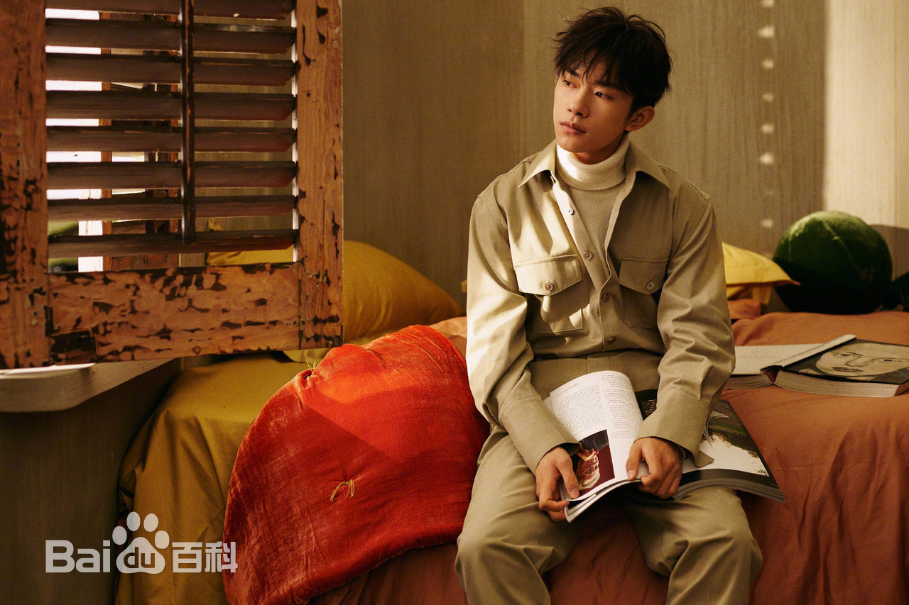
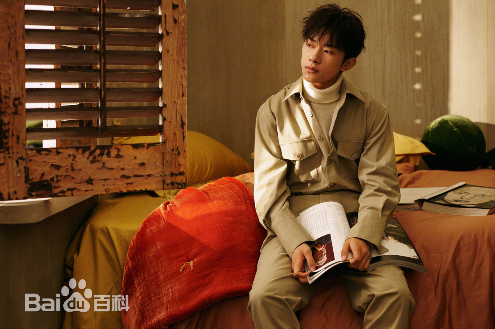
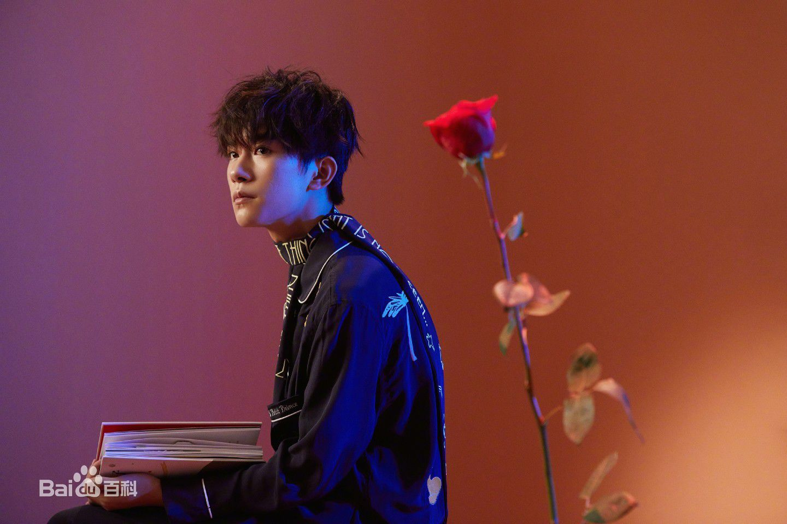
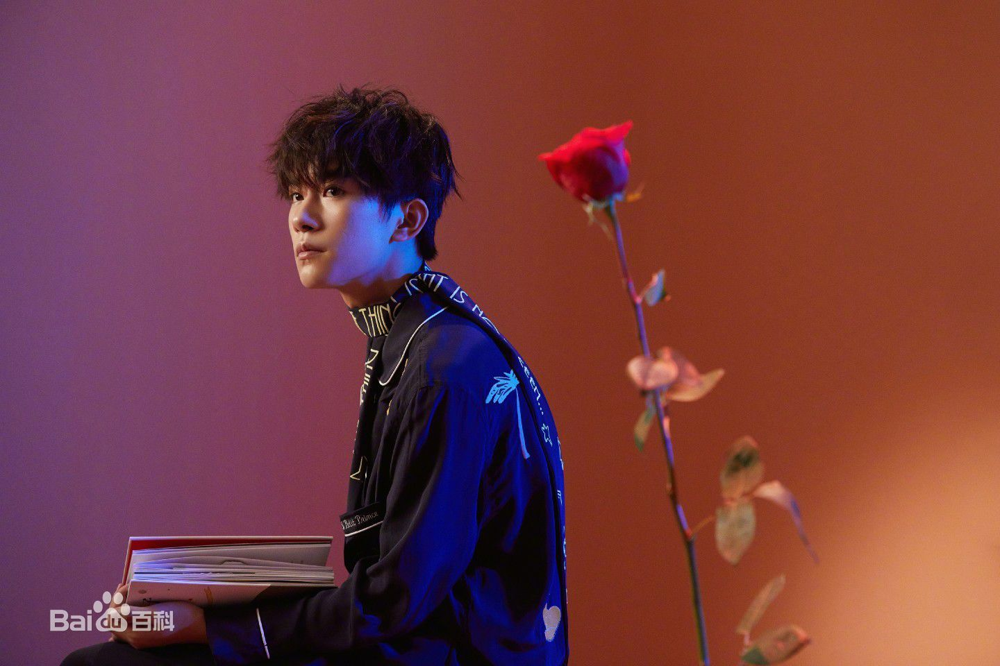
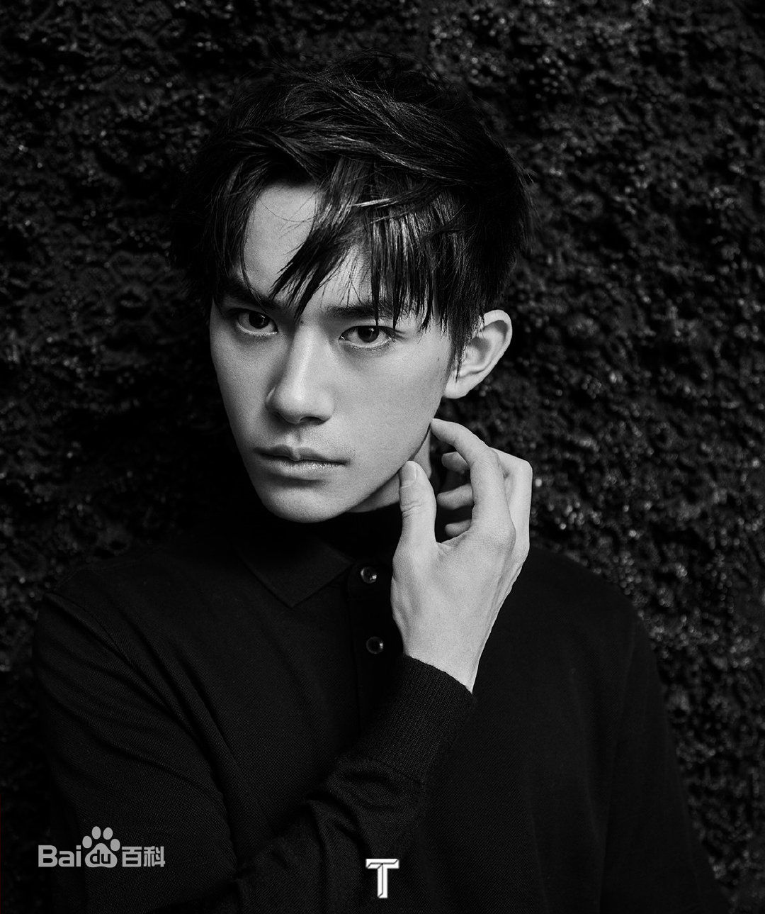

.jpg) 

.jpg)
.jpg)
.jpg) 

易烊千玺
18岁 歌手、舞者、演员
18岁 歌手、舞者、演员
易烊千玺，2000年11月28日生于湖南怀化，中国内地男歌手、舞者、演员，TFBOYS成员，就读于中央戏剧学院 。 2005年，首登电视荧屏，开始参演各类综艺节目。2009年，加入“飞炫少年”组合，两年后退出。2013年6月，获邀加入TF家族 ；8月，以TFBOYS形式出道。 2015年10月，为《小王子》男主角配音，该片刷新法国动画电影在华票房纪录。11月，表演自编舞蹈《IF YOU》和《RHYTHM TA》，创下爱奇艺生日会直播在线用户数据最高纪录。 2016年2月，登上猴年春晚。4月，荣获第16届音乐风云榜年度盛典最受欢迎偶像 。8月，表演自编舞蹈《Tell Me Why》。11月，荣登2016中国泛娱乐指数盛典明星影响力榜首；同月，发行单曲《你说》，并表演自编舞蹈《青春》和《扇子舞》。12月，荣登史记·2016年度十大明星之首。 2017年1月，登上鸡年春晚 。4月，发行单曲《离骚》，该曲荣获Billboard Radio China 2017年度华语金曲 。10月， 确认主演《长安十二时辰》及《艳势番之新青年》两部剧集。11月，发行单曲《Nothing to Lose》和《Unpredictable》。12月，登上《芭莎男士》封面，加盟优酷《这！就是街舞》。 2018年1月，出席第60届格莱美奖颁奖典礼 。2月，登上狗年春晚 。4月，登上《智族GQ》封面 。7月，确认出演电影《少年的你》男主角 。9月，参演雅加达亚运会闭幕式“杭州8分钟”。10月，发行单曲《精彩才刚刚开始》。11月，发行首张个人精选专辑《我乐意沉默释放内心焰火》，并登上《嘉人》《时尚先生》和《睿士》封面 。
| 中文名 | 易烊千玺 | 代表作品 | 少年的你、长安十二时辰、舒适圈、精彩才刚刚开始 |
|---|---|---|---|
| 外文名 | Jackson | Unpredictable、Nothing to Lose、离骚 | |
| 别 名 | 大佬 烊烊 火羊宝 千千 千总 | 主要成就 | 2017ELLE风尚大典ELLE年度人气偶像 |
| 国 籍 | 中华人民共和国 | 丹麦王国史上首位国家旅游形象代言人 | |
| 民 族 | 汉族 | Billboard Radio China 2017年度华语金曲 | |
| 星 座 | 射手座 | 百度百科史记·2016年度十大明星之首 | |
| 身 高 | 成长中 | 2016中国泛娱乐指数盛典明星影响力榜首主要成就主要成就 2017ELLE风尚大典ELLE年度人气偶像 丹麦王国史上首位国家旅游形象代言人 Billboard Radio China 2017年度华语金曲 百度百科史记·2016年度十大明星之首 2016中国泛娱乐指数盛典明星影响力榜首 2016新浪明星势力榜年度人气之星 第16届音乐风云榜年度盛典最受欢迎偶像 登上2016年中央电视台春节联欢晚会 2016微博电影之夜影人榜冠军 全员加速中第一季总冠军 2015两岸男神榜小鲜肉冠军 2015青春励志人物冠军 2015东方男神榜冠军 2014北京欢乐谷街舞精英赛齐舞冠军 2014微博之夜微博年度公益贡献奖 2010圆梦中国年度公益新星 |
|
| 体 重 | 成长中 | 生肖 | 龙 |
| 出生地 | 湖南怀化 | 特长 | 舞蹈、书法、魔术、变脸、乐器等 |
| 出生日期 | 2000年11月28日 | 粉丝名 | 千纸鹤 |
| 职 业 | 歌手、舞者、演员 | 应援色 | 红色 |
| 经纪公司 | 北京时代峰峻文化艺术发展有限公司 | 慈善基金 | 易烊千玺爱心基金 |
| 就读院校中央戏剧学院（2018级） |
幼年时期 易烊千玺生于2000年，“烊”在其家乡湖南怀化是“欢迎”的意思。为了迎接、纪念千禧年，家里人为他取了一个特别的名字——易烊千玺。 2岁学艺，5岁开始学舞并参加电视节目 2005年11月，参与北京电视台青少频道《才艺训练营》节目，获得周冠军 。 2007年5月，受到中央电视台少儿频道《智慧树》栏目邀请，担任小老师。7月，参与北京电视台青少频道《八区主打星》暑期特别节目《小鬼当家》 。8月，参与北京电视台《动感秀场》节目，担任小嘉宾。 2008年2月，参与中央电视台《我与北京共微笑》晚会录制 。7月，参与中央电视台少儿频道《成长在线》节目。8月，参与山西电视台《阳光少年》节目，获得冠军
